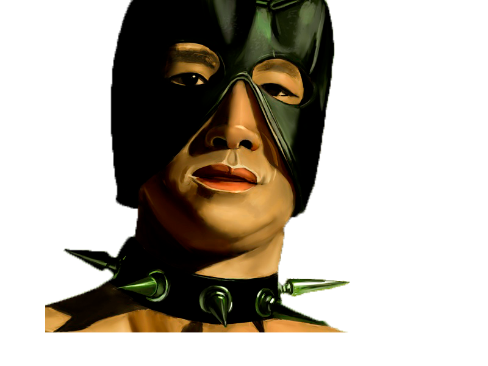

Hello, my name is Konstantin Kotov I am JavaScript Junior
mail: kotov.const@mail.ru; vk: id258608608; contact phone: +375447376947
- On this courses I want to gain enough knowledge to become developer.I am very passionate about the idea of becoming a programmer and getting money in a business that brings me pleasure. My goal is to get a job.
- I always strive to learn from other people in everything, it serves me as a good tool for learning and adapting to tasks of varying complexity.
- my skills : JavaScript, Python, c++, nodeJS;
- At first I studied c ++ at the institute, performed some mathematical methods.
- Then he studied Python from “learn Python 3 hard way” and online courses CodeCademy.
- Also studied js and nodejs on codecademy.
- My English proficiency is Pre-Intermediate;
